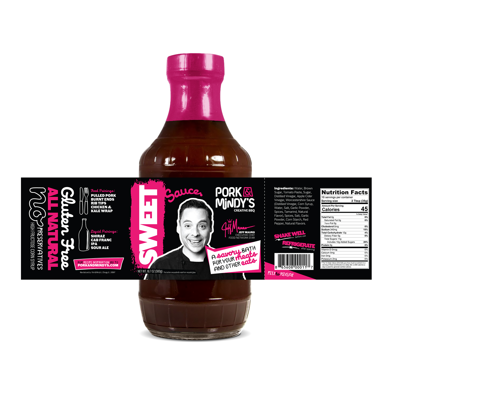
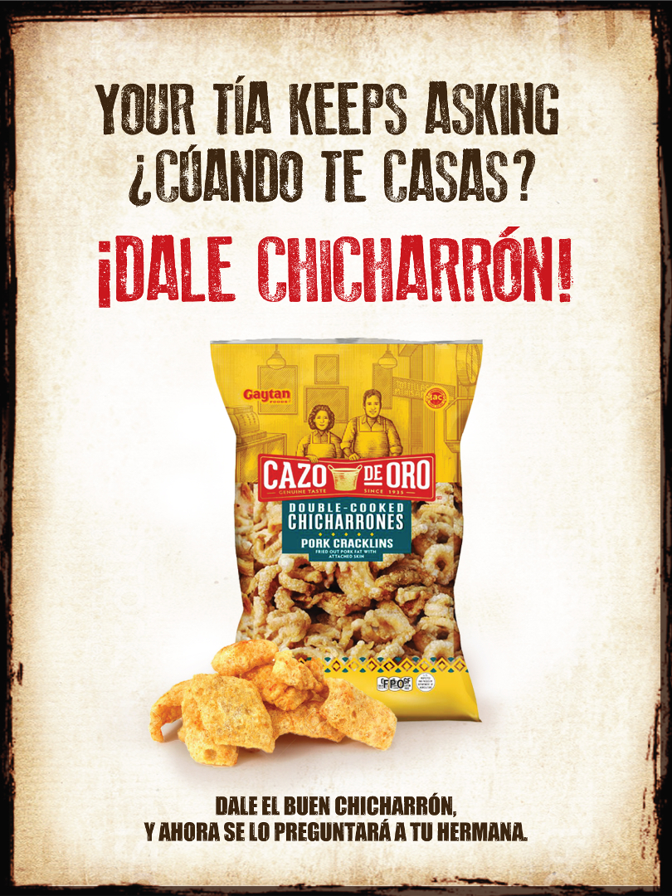
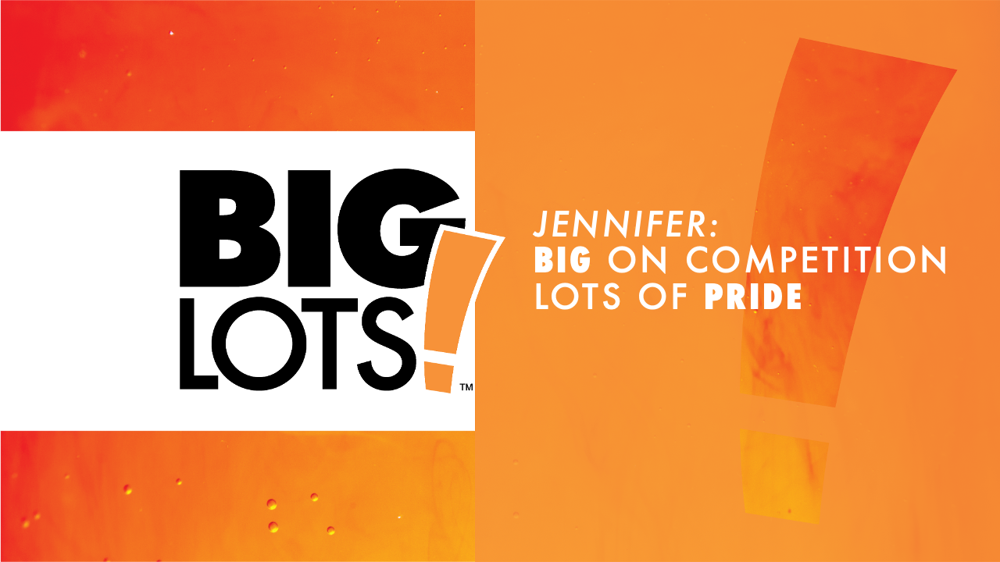
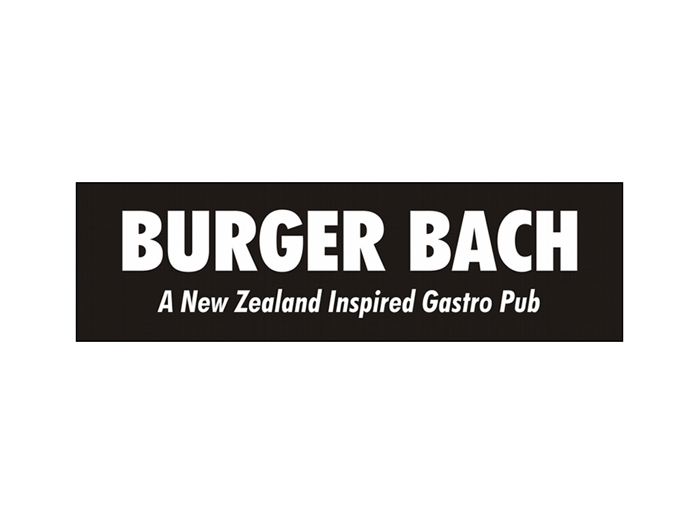
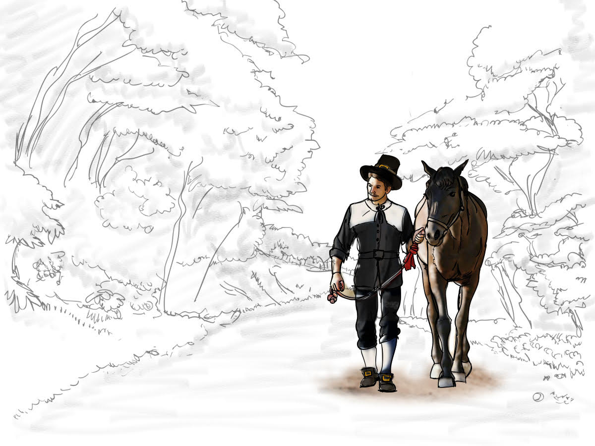

Russ Gottwald: strategist, copywriter, associate creative director, and teacher.
Strategist, copywriter, creative director and teacher. I make teams and their work sharper, and help clients solve the problems conventional approaches haven’t.
Selected work
I can’t show you everything here: current clients aren’t too keen on sharing a ton of details on websites. But I’ll be happy to discuss broad outlines, methodologies, and results.
-

NIPSCO
Energy efficiency programs
Integrated campaign. Strategy, Copywriting.
-

Illinois Department of Human Services
COVID awareness in five languages
Public health campaign. Strategy.
-

Pork & Mindy’s
Brand refinement and retail packaging
Brand and packaging. Strategy, Copywriting, Creative direction.
-

Cazo de Oro
“Dale chicharron.”
Brand campaign. Copywriting.
-

Big Lots!
Outdoor furniture for Latina shoppers
Consumer research. Strategy.
-

Burger Bach
Brand review before franchising
Brand strategy. Strategy.
-

University of South Carolina
Student work, with awards
Instructor portfolio. Teaching, Creative direction, Strategy.
-

University of South Carolina
More student work
Instructor portfolio. Teaching, Creative direction, Strategy.
-

VCU Brandcenter
Second Showing
Brandcenter project. Strategy.
-

Spec work
Campaigns that might have been…but never were
Spec campaigns. Copywriting.
-

Spec work
#turkeysb4trees
Spec TV spot. Copywriting.
No projects tagged with this role yet.